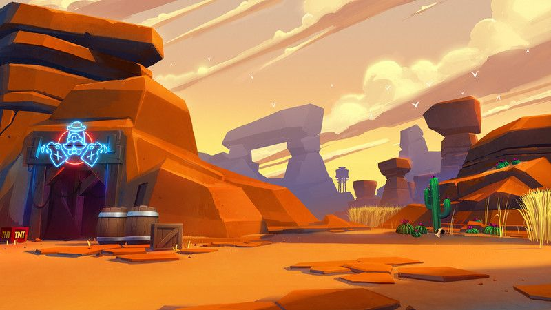

Ωmega Corp
15 janvier 2021

alexis.wagner yanis.coper
iskander.nait-merzoug alexandre.delahaye
Ωmega Corp
15 janvier 2021

alexis.wagner yanis.coper
iskander.nait-merzoug alexandre.delahaye
Ωmega Corp est une entreprise à but non lucratif créer en fin décembre 2020. Notre équipe est composé de 4 personnes issues d’origine et milieux sociaux différents. Nous avons décidé de nous mettre ensemble car notre vision sur le monde du jeux vidéo était similaire. Nous sommes pour le moment spécialisés dans le domaine du jeux vidéo, nous vous présentons ici notre premier projet : The Last.
Le nom de notre entreprise est « Ωmega Corp ». La lettre « Ω » issue de l’alphabet grec, est ici, utilisé en dehors de son contexte alphabétique grec, pour rappeler la forme d’un « O ». Nous avons choisi ce nom, car il donne un accent très professionnel à l’activité de notre groupe et l’utilisation de « Ω » à la place du « O », permet de mieux visualiser le nom de notre entreprise.
En tant que chef du groupe j’ai le rôle d’organisateur cependant l’organisation du groupe est un travail collectif que chaque membre prend à cœur. Ayant trouvé chaque membre de l’équipe et mis en place un server discord dédié à notre projet, j’ai une vision organisée et réaliste sur la coordination d’une équipe. Puis nous avons Alexandre Delahaye qui a déjà une expérience personnelle sur la création de jeux vidéo ainsi que des connaissances en informatiques. Alexis Wagner qui a des bases solides en design et montage vidéo, il est atout majeur pour la partie design de notre projet, il a d’ailleurs déjà créé notre logo. Enfin, Iskander Nait-merzoug qui est la personne ayant le plus de connaissance dans le monde du jeux vidéo, ces connaissances seront un point fort dans l’innovation et la création de fonctionnalité dans The Last.
Lors de l’élaboration de ce projet, pour lequel je suis très content de travailler, notre objectif est de travailler et de progresser en même temps.
Afin que cela soit possible je n’hésiterai pas, comme les autres membres du groupe le ferraient, à aider mes partenaires de projet sur une tâche qui n’est pas la mienne s’ils sont bloqués dans la réalisation de celle-ci. Je ne veux pas de disparité au sein du groupe.
De plus, ayant déjà dû, l’année passé, réaliser un projet, je pourrai apporte un minimum d’expérience de gestion de temps et de stresse durant les présentations qui vont ponctuer ce projet. C’est pourquoi je veillerai à ce que les dates de planning soit respecté. Ma créativité me permettra d’apporter des idées innovantes à notre projet, pour la création des personnages par exemple.
Issu d’une terminale S, et passionné par l’informatique depuis très jeune, ce projet attire donc tout mon intérêt. L’opportunité de participer à un travail d’équipe, de mettre à contribution nos connaissances pour mener à bien un travail dans mon domaine favori me motive beaucoup.
Ayant déjà des connaissances en C# et sur Unity Engine acquises personnellement en plus de ce que j’ai pu apprendre durant le S1, j’ai des facilités a voir ce qui peut être plus ou moins faisable a notre échelle et du temps que peuvent nous prendre certaines choses.
Je pense que ce projet est une opportunité pour notre groupe d’acquérir de nouvelles compétences et d’apprendre a mener a bien un projet en condition d’indépendance.
Iskander Nait Merzoug est un débutant dans la programmation, au contraire du reste de son équipe. Il a cependant envie d'apprendre et une grande marge de progression, et se tire mutuellement vers le haut avec les autres membres du groupe, auquel ses nombreuses idées et son expérience au sein de l'univers du jeu vidéo sont un atout.
Afin de trouver l’idée de notre jeu nous avons tout d’abord chacun réfléchi de notre côté à un jeu, un projet. Puis par la suite nous avons exposé nos idées aux autres membres du groupe afin d’avoir leur point de vue quant à cette idée. Nous avions donc le choix entre plusieurs projets, tel que par exemple un Poule-Renard-Vipère en 3D.
Mais nous avons fini par nous accorder sur notre projet actuel, The Last, car il correspondait à tous les membres du groupe. L’idée nous plaisait et inspirait tous, lorsque nous en parlions nous avions directement des idées quant à ce jeu. Nous nous sommes donc logiquement orientés vers ce projet.
Quant au nom “The Last”, il est tout simplement inspiré du mode de jeu solo de notre jeu ou l’ont doit survivre le plus longtemps possible.
Notre projet The Last est un jeu solo mais aussi multijoueur. Dans lequel vous pouvez incarner différents personnages avec différentes capacités afin de survivre !
Pour la pâte graphique du jeu nous nous sommes orientés vers un style plutôt “cartoon” afin de pouvoir avoir une liberté dans la réalisation de nos personnages et de nos maps. Pour pouvoir mettre de la couleur et égayer notre jeu.

Exemple du style graphique que nous voulons
Le but de notre jeu est le suivant, il doit permettre au joueur de faire des partis rapidement et quand il veut, c’est donc pour cela que nos partis multijoueur dureront 10 min maximum et que le joueur pourra mettre pause dans le mode solo. De plus il y aura un aspect stratégique par la sélection des personnages disposant de différentes spécificités. Le joueur pourra donc choisir un personnage en fonction de son style de jeu.
Enfin l’intérêt de notre jeu est de faire les bonnes décisions au bon moment afin de défendre sa base ou ses alliés. Et bien sûr de le divertir avec des mode “fun”.
Notre jeu vidéo, comme tous ceux l'ayant précédé, s'est inspiré de ses prédécesseurs afin d'en acquérir les meilleures qualités et de les reproduire, tout en ajoutant sa propre touche personnelle et sa propre pierre à l'édifice qu'est l'histoire du monde du jeu vidéo, même s'il ne la marquera sans doute pas autant que certains classiques. Le style graphique ainsi que certaines idées de Gameplay sont inspirés de Brawlstar, édité par Supercell, combiné au mode de jeu CTF "Capture the Flag" beaucoup repris dans différentes licences de FPS, tels que Counter Strike ou Call of Duty. Il reprend également le mode de jeu "Tower Defense", bien souvent associé au classique Plants vs Zombies.
The Last fonctionne autour de la survie du joueur au cours de la partie, face a des ennemis dont l’objectif est de détruire sa base et l’éliminer. Différents aspects du concept sont implémentés à travers plusieurs modes de jeu, en fonction du choix du joueur entre une partie locale, en solo contre l’IA, ou bien une palpitante partie multijoueur entre amis comprenant différentes approches du Survival a plusieurs disponibles. Le jeu permet également des améliorations du personnage et de la base en fonction des prouesses de survie du joueur par l’intermédiaire d’un store.
Le mode solo du jeu est basé sur une survie du joueur a des vagues d’ennemis contrôlés par l’IA dans laquelle ce dernier devra faire face a ses adversaires le plus longtemps possible. Au cours de la partie, les prouesses du joueur lui permettront d’acquérir des améliorations telles que des protections pour sa base ou des armes pour le personnage sur une interface de store implémentée.
Plusieurs maps sont disponibles dans ce mode Solo.
Le multijoueur de The Last se compose de plusieurs modes de jeu, un CTF-like dans lequel les joueurs s’attaquent entre eux, ou bien s’entraident dans un mode coopération pour affronter des vagues d’ennemis IA. Des maps spéciales pour le online seront disponibles pour offrir à nos joueurs la meilleure expérience de gameplay
Nous allons nous orienter comme dit précédemment vers un style “cartoon”, en effet ce style nous laisse une grande liberté dans la création des niveaux ainsi que des personnages.
Nous réaliserons les modèles de maps et de personnages sur blender ainsi que sur Unity. Ainsi nous nous baserons stylistiquement parlant que sur nos propres modèles ainsi que sur nos propres meshes.
Nous vous rappelons que notre projet ne dégagera aucun bénéfice. Notre seul soutien sera les ressource fournis par L‘Epita. Les dépenses principales de notre groupe sont principalement liées à des servers et de l’espaces de stockage externe. Cependant nous utiliseront des logiciels avec des licences fournis par L’Epita comme par exemple office 365. De plus avons déjà en notre possession des logiciels comme Adobe ou en encore Rider. Si nous devions faire une campagne de communication pour la sortie de notre jeu les coûts devront être revu à la hausse, car il faudrait créer des produit dérivée comme par exemple des pulls ou encore des carte de visite à l’effigie de notre jeux.
Pour conclure, la production de The Last va non seulement aboutir à un projet touchant plusieurs cibles dans les modes les plus appréciés du jeu vidéo en général, mais également nous permettre à nous, étudiants de l'EPITA, d'évoluer et d'apprendre sur le développement de jeux et le codage. En réalisant ainsi notre premier projet de semestre, nous nous mettons dans une ambiance sérieuse comparable à celle du milieu professionnel, et nous dirigeons doucement vers le monde du travail. Aussi, pour mettre toutes les chances de réussite de notre côté et nous donner la meilleure expérience possible, nous donnerons le maximum pour ce projet.